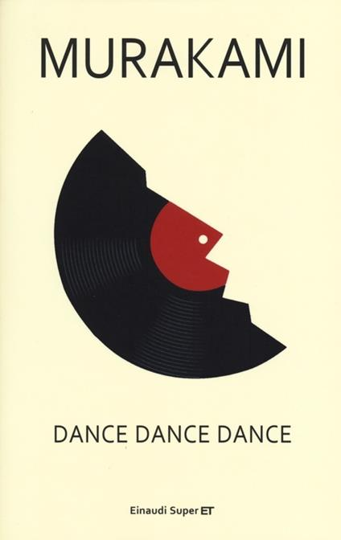

"Alcuni mi giudicano piú ingenuo, o piú calcolatore, di quanto io sia in realtà. Pazienza. Anche come sono io in realtà, è una mia idea soggettiva. Gli altri avranno le loro ragioni. Che importa? Non è una questione di malintesi, ma di modi di vedere diversi. Il mio è questo."
"Ma l'onestà ha qualcosa a che fare col sesso? mi chiesi. La risposta la conoscevo già: nelle cose di sesso l'onestà è stimolante come guardare una pietra ricoperta di muschio in un giardino deserto."
"tavo di guardarla. Guardandola, pensavo che se avessi voluto avrei potuto fare l'amore con lei. A volte sento il bisogno di farmi coraggio con pensieri del genere."
"né ingiusto. La stanchezza colpisce senza riguardi per l'età e la bellezza. Come la pioggia, i terremoti, i fulmini e le inondazioni."
"balsamazioni, fino alla morte. In fondo, quella che chiamiamo civiltà non è solo la somma di tante piccole cose?"
"- Capisco, - dissi. - Ma cosa devo fare, allora? - Danzare, - rispose. - Continuare a danzare, finché ci sarà musica. Capisci quello che ti sto dicendo? Devi danzare. Danzare senza mai fermarti. Non devi chiederti perché. Non devi"
"la cucina e il servizio peggiorano. Nove casi su dieci. Perché si altera l'equilibrio tra domanda e offerta. E i responsabili siamo noi. Troviamo qualcosa, e la roviniamo sistematicamente. È immacolata? Noi la riempiamo di macchie. Ed è questo che la gente chiama informazione. Se poi facciamo la stessa cosa con"
"Yuki avrebbe richiamato. O se non lei, qualcun altro. In momenti cosí il telefono sembra una bomba a orologeria. Nessuno sa quando scoppierà, ma il tempo è scandito da questa possibilità. Il telefono ha una forma strana. Molto strana. Di solito"
"Per me l’amore è un puro concetto dotato di un corpo inadeguato, che passando attraverso cavi sotterranei, linee telefoniche eccetera, riesce faticosamente a trovare il contatto. Una cosa terribilmente imperfetta. A volte ci sono errori di trasmissione. A volte non si conosce il numero. A volte ti chiamano, ma hanno sbagliato numero. Non c’è niente da fare. Finché vivremo in questo corpo, sarà cosí. Ho cercato di spiegarglielo. Infinite volte."
"do era tanto piú semplice. Credevo ancora che gli sforzi venissero premiati, che le parole avessero un senso, che della bellezza si potesse godere. Ma quando avevo tredici anni non ero un"
"- Non sono testardo. Cerco solo di seguire il mio sistema di valori."
"- Sono momenti che capitano a tutti, - dissi. - Siamo esseri umani, non progressioni geometriche."
"- Sfortunatamente sí. Scorre? Che dico, precipita. Il passato aumenta e il futuro diminuisce. Le possibilità si assottigliano, i rimpianti crescono."
"- Se tendi le orecchie, ascolterai. Se aguzzi la vista, vedrai, - sentenziai."
"Guardai l’orologio. Mancava poco alle quattro. Un po’ prima dell’alba. L’ora in cui i pensieri scendono piú in profondità e si deformano. Avevo tutto il corpo freddo e irrigidito. Era"
"E tempo significava realtà."